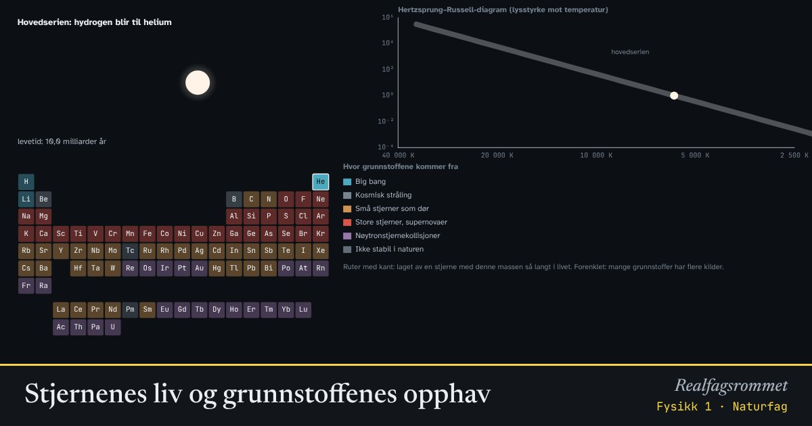

Stjernenes liv og grunnstoffenes opphav
Stjerner er fusjonsreaktorer. I kjernen smeltes hydrogen sammen til helium, og senere til tyngre grunnstoffer. Hvor lenge en stjerne lever, og hvordan den dør, avhenger nesten bare av massen. Atomene i kroppen din er laget i stjerner.
Start animasjonen
Formler
Om animasjonen
En stjerne er i hovedserien så lenge den smelter hydrogen til helium i kjernen. Store stjerner har mye mer brensel, men bruker det så fort at de lever mye kortere. Sola lever omtrent 10 milliarder år, en stjerne på 15 solmasser bare rundt 10 millioner år.
Når hydrogenet i kjernen er brukt opp, sveller stjerna til en rød kjempe. Kjernen blir varm nok til å smelte helium til karbon og oksygen. Stjerner som sola kaster av seg de ytre lagene og ender som en hvit dverg.
Stjerner over omtrent åtte solmasser smelter stadig tyngre stoffer helt fram til jern. Fusjon av jern gir ikke energi, så kjernen kollapser, og stjerna eksploderer som en supernova. Igjen blir en nøytronstjerne eller et svart hull.
Grunnstoffer tyngre enn jern lages for det meste når atomkjerner fanger nøytroner: langsomt i døende kjempestjerner, og raskt når to nøytronstjerner kolliderer. Mye av gullet og uranet på jorda kommer fra slike kollisjoner. Fargene i periodesystemet er forenklet; mange grunnstoffer har flere kilder.
Prøv dette
- Hvor lenge lever en stjerne med dobbelt så stor masse som sola?
- Hvilke grunnstoffer kan sola lage i løpet av livet?
- Hvorfor stopper fusjonen i store stjerner ved jern?
- Hvor kommer gullet i en ring fra?
Kompetansemål
- Naturfag: Big bang og observasjoner som støtter teorien
- Fysikk 1: Fusjon, og hvordan grunnstoffer dannes i stjerner
Mer om stråling, atomer og kjerner
- Det elektromagnetiske spekteret
- Stråling fra varme legemer
- Stråling og overflate: hvorfor blir svart varmere?
- Drivhuseffekten og jordas strålingsbalanse
- Rutherfords spredningsforsøk
- Bohrs atommodell og linjespektre
- Radioaktivt henfall og halveringstid
- Fusjon, fisjon og stjernenes grunnstoffer